로드뷰 화면 대신 항공 사진, 실제 외관·조경 사진, 옛 도면과 단지배치도를 함께 검토했습니다. 이미지를 누르면 크게 볼 수 있습니다.
옛 기록 · 사진+도면 · 1973년 평면·1970년대 전경
5층 저층 단지의 배치와 평면
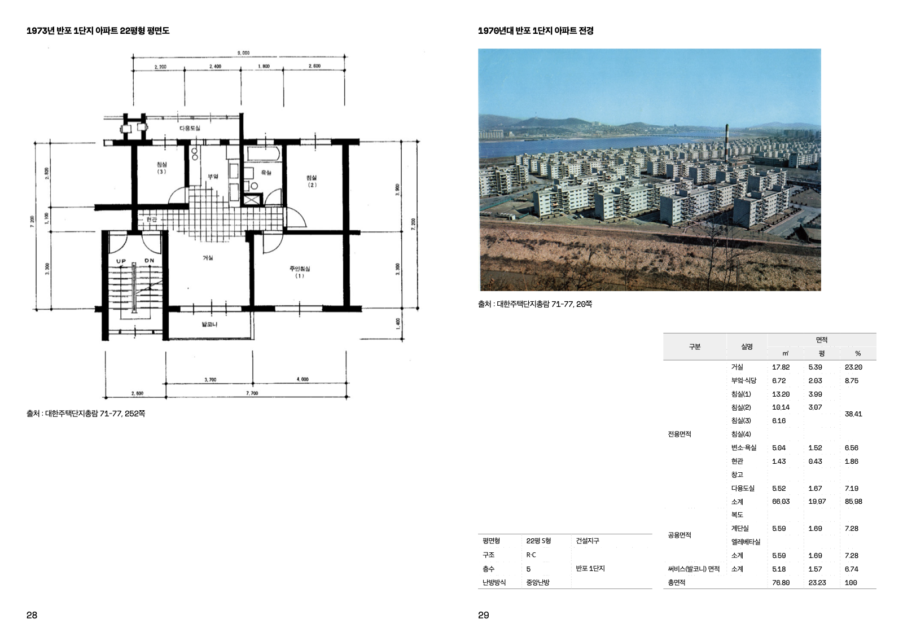
직접 본 점 낮고 긴 동이 반복되고, 동 사이에는 빈 공간과 길이 남습니다. 작은 단지라는 뜻은 아닙니다.
제작 기준 5층 평면에 승강기실 면적이 기입되지 않은 사례입니다. 모든 저층에 높은 승강기 옥탑을 붙이지 않습니다.
서울기록원 · 주택 카탈로그당시 현황사진 · 2016년 자료
동 사이 주차와 나무가 있는 구축 단지
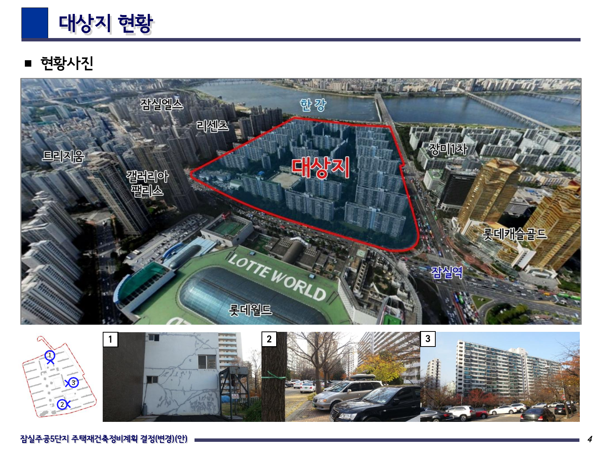
직접 본 점 규칙적으로 놓인 동 사이에 차도·지상 주차·성장한 나무가 함께 있습니다. 앞쪽의 긴 창과 측면 벽도 서로 다릅니다.
제작 기준 이 자료의 정비구역 경계가 곧 순수 주거단지 경계는 아닙니다. 학교 등 별도 용지를 먼저 분리해야 합니다.
송파구의회 · 잠실주공5단지 현황실제 항공 사진 · 2023년 기사 사진
옥상 상자는 아무 곳에나 있지 않습니다
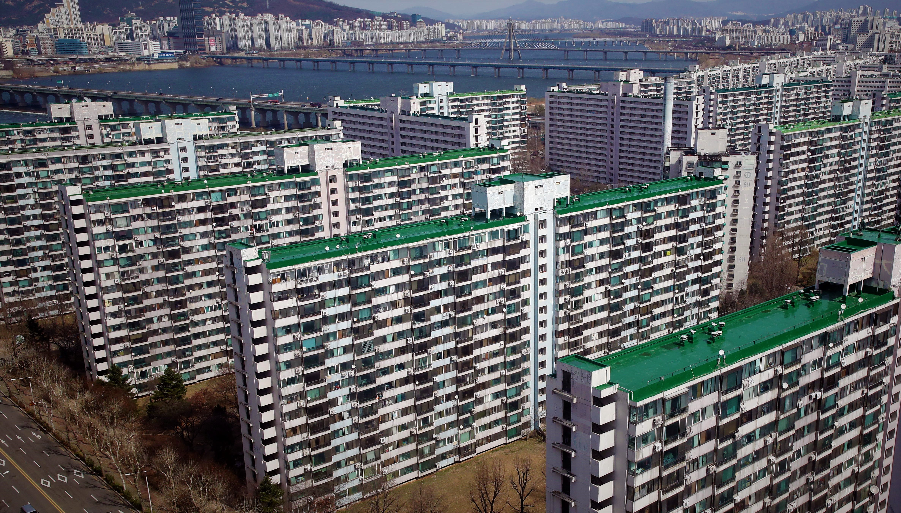
직접 본 점 넓고 평평한 옥상, 난간, 반복되는 돌출부와 세로 계단 구역을 함께 볼 수 있습니다. 건물 앞·뒤 창 배열이 다릅니다.
제작 기준 사진에서 보이는 상자의 내부 용도와 정확한 높이는 확인되지 않았습니다. 형상과 기능을 별도로 기록합니다.
경향신문 · 잠실주공5단지 항공 사진실제 사진 · 2026년 기사 사진
같은 단지 안에서도 달라지는 높이와 끝부분
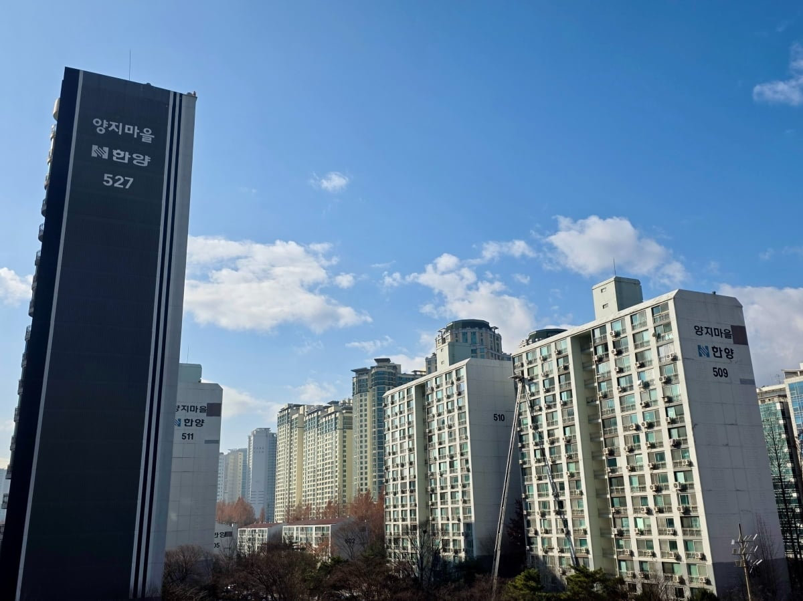
직접 본 점 긴 창 반복과 창이 적은 끝벽, 높게 솟은 옥상 부분을 비교할 수 있습니다. 뒤쪽 건물을 전부 같은 단지로 묶으면 안 됩니다.
제작 기준 사진 속 색을 준공 당시 색으로 단정하지 않습니다. 동별 준공일과 최근 보수 여부를 추가 확인합니다.
한국경제 · 분당 양지마을 사진시공사 외관 사진 · 시공사 준공(예정) 표기 2003년
2003년 준공 표기 사례: 서로 다른 동 높이와 옥탑
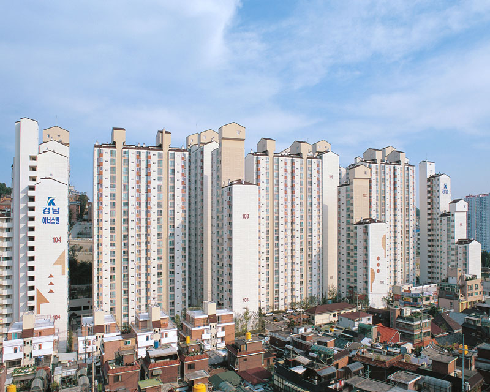
직접 본 점 밝은 몸체와 다른 색의 세로 계단 구역, 작게 경사진 상부 덮개, 동별 높이 차이와 벽돌색 하부가 보입니다.
제작 기준 시공사 표기는 지상 8–24층입니다. 모든 동을 최고층으로 올리지 않고 동별 층수를 사용합니다. 사진 촬영일은 미확인입니다.
경남기업 · 서울 미아 경남아너스빌설계 배치도 · 준공 사진 아님 · 공식 분양 설계자료
단지는 건물만 모아놓은 공간이 아닙니다
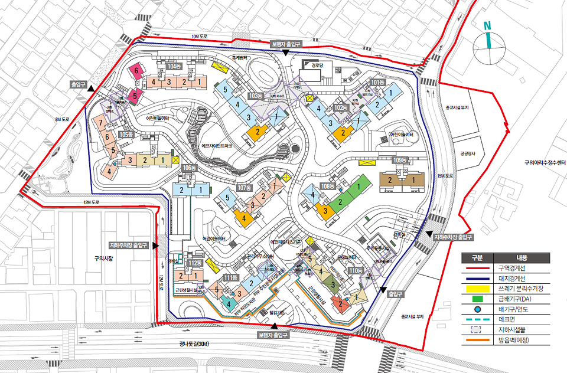
직접 본 점 차량 입구와 보행 입구가 다르고, 동 사이 길·놀이터·휴게공간·분리수거장·급배기구가 따로 배치됩니다.
제작 기준 도면의 대지경계와 정비구역 경계를 구분합니다. 실제 준공 후 사진으로 시설 위치와 변경 여부를 확인해야 합니다.
래미안 파크스위트 · 단지배치도실제 조경 사진 · 2023년 기사
나무·관목·벤치·포장이 함께 만드는 정원
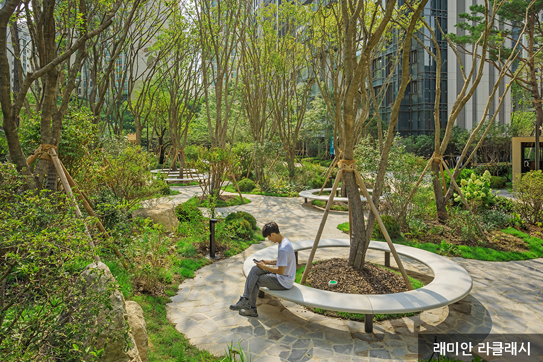
직접 본 점 높은 나무 아래에 낮은 식재가 있고, 나무 주변 벤치와 보행 포장이 연결됩니다.
제작 기준 빈땅 전체에 나무를 무작위로 뿌리지 않습니다. 길·앉는 자리·화단을 먼저 나눕니다.
삼성물산 · 아파트 조경 실제 사례실제 조경 사진 · 2023년 기사
단차가 있는 정원과 낮은 시설동
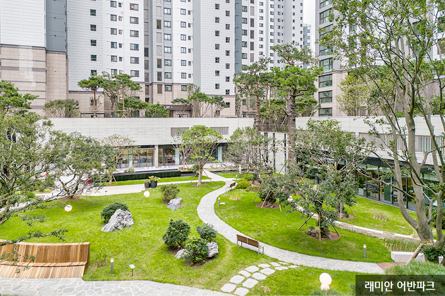
직접 본 점 잔디, 굽은 산책길, 벤치, 낮은 시설동과 위쪽 공간이 함께 보입니다.
제작 기준 단지 전체를 하나의 평평한 바닥으로 덮지 않습니다. 실제 지형과 단차를 먼저 확인합니다.
삼성물산 · 아파트 조경 실제 사례실제 입주탐방 사진 · 원베일리 입주탐방
최신 사례의 상부 장식과 다양한 높이
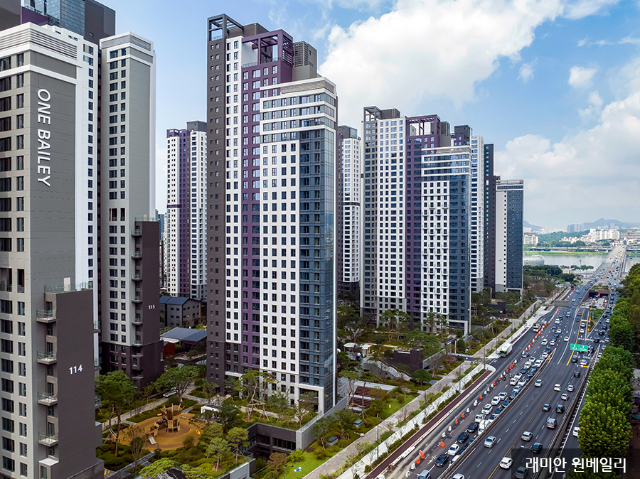
직접 본 점 옥상에는 빈 프레임과 불투명한 덮개가 함께 보이고, 동 사이에는 정원과 놀이 공간이 있습니다.
제작 기준 이 단지의 상부 장식을 모든 신축에 복사하지 않습니다.
래미안 원베일리 · 입주탐방실제 입주탐방 사진 · 원베일리 입주탐방
단지 입구는 별도 구조입니다
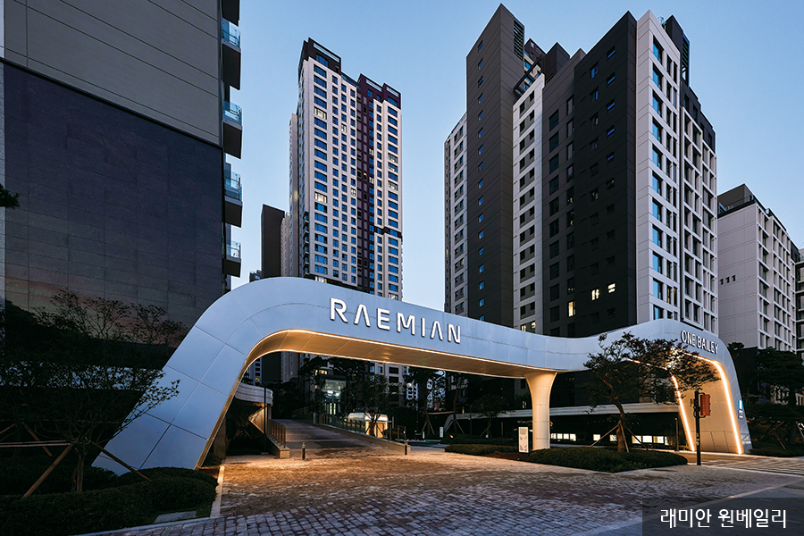
직접 본 점 넓은 입구 구조물 아래로 길이 이어집니다.
제작 기준 출입구는 외부 도로와 연결된 위치에만 둡니다.
래미안 원베일리 · 입주탐방실제 입주탐방 사진 · 원베일리 입주탐방
지하주차장으로 이어지는 경사로
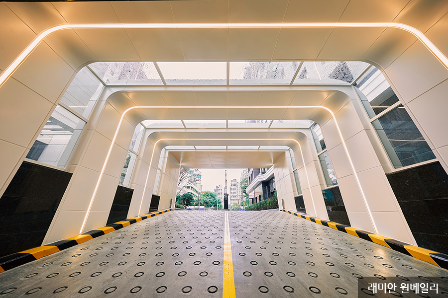
직접 본 점 경사진 차로와 양옆 벽, 상부 덮개를 확인할 수 있습니다.
제작 기준 검은 문만 붙이지 않고 길과 높이를 연결합니다.
래미안 원베일리 · 입주탐방실제 입주탐방 사진 · 원베일리 입주탐방
차량 길과 동 출입구의 관계
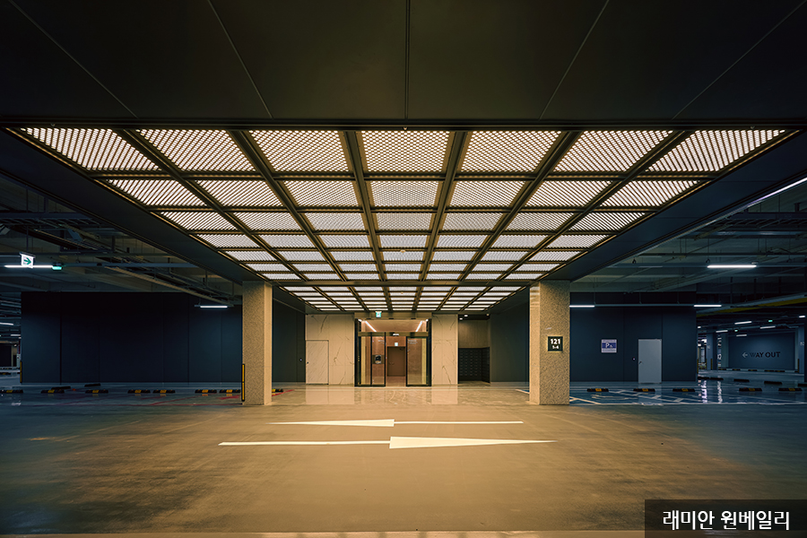
직접 본 점 주차장 차로에서 동 출입구로 연결됩니다.
제작 기준 지하 전체를 만들기 전에도 입구 주변의 연결은 맞춰야 합니다.
래미안 원베일리 · 입주탐방